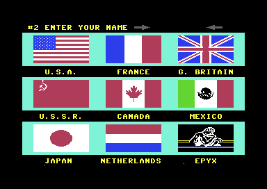
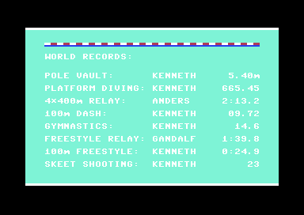
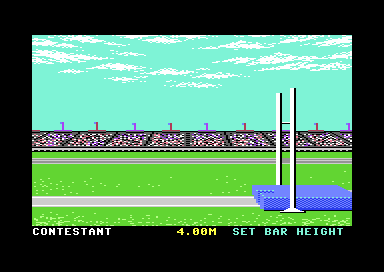
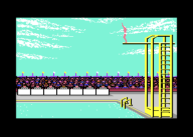
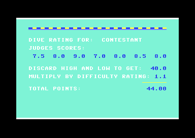
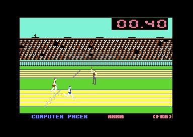
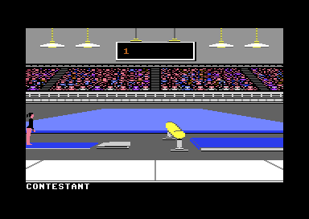
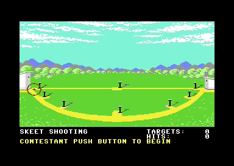

<meta charset="utf-8">
<meta name="viewport" content="width=device-width, initial-scale=1">
<title>Summer Games — gameplay</title>
<link rel="preconnect" href="https://fonts.googleapis.com">
<link rel="stylesheet" href="https://fonts.googleapis.com/css2?family=Lato:wght@400;700;900&family=IBM+Plex+Mono:wght@400;500&display=swap">
<style>
:root{
  --bg:#23262d; --paper:#e9e7e1; --surface:#ffffff; --surface-2:#f1efea; --line:#d5d3cc; --line-soft:#e0ded8;
  --ink:#2f3136; --ink-soft:#55585f; --ink-mute:#80838a;
  --link:#1f5fa8; --link-hover:#154480; --accent:#1f5fa8;
  --amber:#c25a00; --cyan:#1f5fa8; --coral:#d04a3a; --green:#2a8a4a; --violet:#4a5bd6; --hl:#fff0c2;
  --chip:#2f3136; --chip-ink:#ffffff;
  --c64blue:#40318d; --c64grey:#686868;
  --fd:'Lato',system-ui,sans-serif; --fb:'Lato',system-ui,sans-serif; --fm:'IBM Plex Mono',ui-monospace,Menlo,monospace;
  --col:1080px; --gx:68px; --fs:17px; --lh:1.6; --hw:900; --h1:46px; --h2:26px; --sy:48px; --pp:26px; --r:10px;
  --plate-shadow:0 1px 2px rgba(0,0,0,.05),0 4px 14px rgba(0,0,0,.05);
}
*{box-sizing:border-box}
html{background:var(--bg);min-height:100%}
body{background:var(--paper);color:var(--ink);font-family:var(--fb);font-size:var(--fs);line-height:var(--lh);max-width:var(--col);margin:0 auto;min-height:100vh;padding:0 0 4rem}
h1,h2,h3{font-weight:var(--hw);letter-spacing:-.01em;text-wrap:balance;color:var(--ink);margin:0}
.wrap{padding:0 var(--gx)}
.hero{padding:48px var(--gx) 8px;text-align:left}
.eyebrow{font-family:var(--fm);font-size:12px;letter-spacing:.08em;text-transform:uppercase;color:var(--ink-mute);margin:0 0 10px}
.hero h1{font-size:var(--h1);line-height:1.15;letter-spacing:-.02em;margin:0 0 14px}
.hero .sub{margin:0 0 .6em;color:var(--ink-soft)}
section{padding:var(--sy) 0 24px}
section:last-of-type{border-bottom:none}
.fig{font-family:var(--fm);font-size:12px;letter-spacing:.08em;text-transform:uppercase;color:var(--ink-mute);margin:0 0 10px}
h2.t{font-size:var(--h2);margin-bottom:12px}
.lede{color:var(--ink-soft);margin:0 0 30px}
.plate{background:var(--surface);border:1px solid var(--line);border-radius:var(--r);padding:var(--pp);box-shadow:var(--plate-shadow)}
.cap{font-size:14px;color:var(--ink-mute);margin-top:14px;line-height:1.55}
.cap b{color:var(--ink);font-weight:700}
code{font-family:var(--fm);font-size:.82em;background:var(--chip);color:var(--chip-ink);border-radius:4px;padding:2px 6px;overflow-wrap:break-word;-webkit-box-decoration-break:clone;box-decoration-break:clone}

.plate{margin:0 0 22px}
sup.fn{font-size:.7em;line-height:0}
sup.fn a{text-decoration:none}
sup.fn + sup.fn::before{content:","}
.overview-shot{margin:22px 0}
.overview-shot img{width:100%;max-width:768px;height:auto;aspect-ratio:384/272;image-rendering:pixelated;display:block}
.overview-shot figcaption{font-size:14px;color:var(--ink-mute);margin-top:8px;max-width:768px}
.gg-px{image-rendering:pixelated;display:block;max-width:100%;height:auto;margin:0 auto 10px}
.gg-wide{width:100%}
.gg-read{font-family:var(--fm);font-size:13px;background:var(--surface-2);border-radius:6px;padding:8px 12px;margin:8px 0 10px}
.gg-two{display:grid;grid-template-columns:1fr 1fr;gap:16px;align-items:end}
.gg-two figure{margin:0}
.gg-two figcaption{font-family:var(--fm);font-size:12px;color:var(--ink-mute);text-align:center}
.gg-lab{display:block;font-family:var(--fm);font-size:13px;color:var(--ink-soft);margin:10px 0 4px}
.gg-range{width:100%;max-width:520px;display:block}
.gg-table{border-collapse:collapse;font-size:15px;width:100%;margin:0 0 12px}
.gg-table td,.gg-table th{border-bottom:1px solid var(--line-soft);padding:6px 8px;text-align:left;vertical-align:top}
.gg-scroll{overflow-x:auto}
@media (max-width:760px){:root{--gx:16px;--h1:36px;--pp:14px}.gg-two{grid-template-columns:1fr}}
.gg-map{display:block;image-rendering:pixelated;cursor:crosshair;max-width:none}
.gg-check{display:flex;align-items:center;gap:6px;margin-left:10px;font-family:var(--fm);font-size:13px}
.gg-judo{display:grid;grid-template-columns:auto 1fr;gap:16px;align-items:start}
.gg-judo canvas{max-width:100%;height:auto;cursor:crosshair;image-rendering:auto}
.gg-shields{display:flex;flex-wrap:wrap;gap:6px;align-content:flex-start}
[data-own-look] .gg-shields button,[data-own-look] .gg-run button{font:500 13px var(--fm);padding:6px 10px;border:1px solid var(--line);border-radius:6px;background:var(--surface);color:var(--ink);cursor:pointer}
[data-own-look] .gg-shields button[aria-pressed="true"]{background:var(--btn-on-bg);color:var(--btn-on-ink);border-color:var(--btn-on-line)}
.gg-run{display:flex;gap:8px;flex-wrap:wrap}
[data-own-look] .gg-run button{min-width:96px;padding:10px 14px}
.gg-bar{height:16px;background:var(--surface-2);border:1px solid var(--line);border-radius:6px;overflow:hidden;margin:12px 0 0;max-width:520px}
.gg-bar div{height:100%;width:0;background:repeating-linear-gradient(45deg,#c25a00 0 6px,#e08a3c 6px 12px)}
@media (max-width:760px){.gg-judo{grid-template-columns:1fr}}
.sg-sheet{display:flex;flex-wrap:wrap;gap:6px;margin:8px 0 6px}
.sg-sheet figure{margin:0;text-align:center;font-family:var(--fm);font-size:11px;color:var(--ink-mute)}
.sg-sheet canvas{display:block;image-rendering:pixelated;background:#40318d;border-radius:3px}
.sg-venue canvas{width:100%;max-width:640px;height:auto;image-rendering:pixelated;display:block}
.sg-player{margin:10px 0 0}
.gg-table td.n,.gg-table th.n{text-align:right}
kbd{font-family:var(--fm);font-size:.85em;border:1px solid var(--line);border-bottom-width:2px;border-radius:4px;padding:1px 5px;background:var(--surface)}
</style>

<!-- tabs -->
<header class="hero">
  <p class="eyebrow">Commodore 64 · 1984 · Epyx</p>
  <h1>Summer Games: gameplay</h1>
  <p class="sub">How the eight events work, from the code: the grip that sets a vaulter's speed, the seven judges who are really one score cut into pieces, the waggle that is timed, and the stroke that is a rhythm.</p>
</header>
<main class="wrap">

<section id="menu">
  <p class="fig">01 · Before the events</p>
  <h2 class="t">Names, flags, and a menu of six</h2>
  <p>The main menu has six lines: compete in all the events, compete in one event, practise one event, the number of joysticks, the world records, and the opening ceremony (<a href="source-resident.html#0C1F"><code>main_menu</code></a>). The stick moves an arrow and fire picks, or a number key does it at once (<a href="source-resident.html#1683"><code>menu_select</code></a>). Practice skips the players altogether: there is one, and the engine names every record "CONTESTANT" (<a href="source-resident.html#0D15"><code>practice</code></a>).</p>
  <figure class="overview-shot"><figcaption>Registration: nine of the eighteen flags show at a time, and the chart scrolls sideways a flag at a time (<a href="source-resident.html#35BF"><code>choose_flag</code></a>).</figcaption></figure>
  <p>To compete, up to eight players register. Each types a name of up to ten letters, with DEL to rub out and RETURN to finish; a name already taken is refused, and an empty name ends the registration (<a href="source-resident.html#347F"><code>type_name</code></a>). Then the player picks a country from a chart of eighteen flags in three bands of six: left and right scroll it one flag at a time, up and down move a flashing frame between the bands, and fire takes the flag under the frame and plays its <a href="#music">anthem</a> (<a href="source-resident.html#35BF"><code>choose_flag</code></a>, <a href="source-resident.html#375D"><code>frame_flash</code></a>). The countries are the U.S.A., France, Great Britain, West Germany, Austria, Italy, the U.S.S.R., Canada, Mexico, Spain, Denmark, Australia, Japan, the Netherlands, Norway, Ireland, Brazil, and Epyx (<a href="source-resident.html#3577"><code>country_codes</code></a>).</p>
  <p>Before each event the players are shuffled into a new order (<a href="source-resident.html#1619"><code>shuffle_players</code></a>). After it, the results are sorted, tied scores share a place, and the first three get gold, silver, and bronze (<a href="source-resident.html#130D"><code>event_results</code></a>). The winner's flag is drawn in the middle of the screen with a band flashing behind it while the country's anthem plays (<a href="source-resident.html#1384"><code>victory</code></a>). In the full competition each medal is worth points, 5 for gold, 3 for silver, and 1 for bronze, and a table of standings follows every event (<a href="source-resident.html#10D8"><code>count_points</code></a>, <a href="source-resident.html#1051"><code>standings</code></a>).</p>
  <p>Each event has a world record, kept on the disk with its holder's name (<a href="source-resident.html#0B00"><code>world_records</code></a>). A winner who equals or beats it sees "NEW WORLD RECORD FOR" the event, and the engine writes the records to the disk at once (<a href="source-resident.html#1403"><code>check_record</code></a>). The save is careful: it writes a file called WR2, and only when that has worked does it scratch the old WR and rename WR2 in its place, so a failed write never loses the records (<a href="source-resident.html#1563"><code>save_records</code></a>). The copy studied holds Kenneth's records in six events, Anders's in the relay, and Gandalf's in the freestyle relay.</p>
  <figure class="overview-shot"><figcaption>The world records on the copy studied. The game reads them from the file WR when it starts, and from DEFAULT if WR cannot be read.</figcaption></figure>
</section>

<section id="music">
  <p class="fig">02 · The anthems</p>
  <h2 class="t">Music: eighteen anthems and two more tunes</h2>
  <p>Every country on the chart has its own tune, Epyx included, and a country's number is its tune's number: the U.S.A. is 0, so its tune is the first, and so on (<a href="source-resident.html#1E58"><code>tune_offsets</code></a>). Numbers 6 and 7 fall between the countries' numbers and hold two more tunes, one for the final standings (6) and one for the world records screen (7). The U.S.A.'s opens with the falling and rising chord of <i>The Star-Spangled Banner</i> (<a href="source-resident.html#1CE4"><code>tune_usa</code></a>).</p>
  <p>The player is small. A tune is a list of lines of four bytes, one note for each of the three voices and a length, and every step the player counts down the note and lifts the gates for its last four steps, so each note is separated from the next (<a href="source-resident.html#1E70"><code>music_step</code></a>). Voices 1 and 2 play a pulse wave and voice 3 a sawtooth. Wherever the engine plays music it calls the player twice a frame.</p>
  <div class="plate">
    <div id="sg-sid" class="sg-player"></div>
    <p class="cap">The game's own player, <a href="source-resident.html#1E70"><code>music_step</code></a>, run on the site's model of the 6502 over the engine's bytes, twice a frame as the game calls it, after the engine's own set-up (<a href="source-resident.html#1E02"><code>sound_init</code></a>) and <a href="source-resident.html#1E3F"><code>start_tune</code></a> with the tune's number.</p>
  </div>
  <p>The <a href="#ceremony">opening ceremony</a> has its own copy of the player, with a fanfare, and a second tune that it never starts: the same notes as the engine's world records tune (<a href="discoveries.html#tune">Discoveries</a>).</p>
  <div class="plate">
    <div id="sg-cer" class="sg-player"></div>
    <p class="cap">The ceremony's player, <a href="source-front.html#7A8D"><code>cer_music_step</code></a>, run the same way, twice a frame as the ceremony's two raster interrupts call it.</p>
  </div>
</section>

<section id="ceremony">
  <p class="fig">03 · The opening ceremony</p>
  <h2 class="t">A torch, a flame, and eight doves</h2>
  <p>The ceremony is a picture of the stadium with sprites moving over it. The torch-bearer is three sprites, the runner's body, the torch, and its flame, stepping through fourteen frames as the runner goes along the front of the stands and climbs the steps (<a href="source-front.html#7E91"><code>cer_torch_frames</code></a>, <a href="source-front.html#7EBB"><code>cer_climb</code></a>). The torch's little flame flickers because every frame the ceremony writes random bytes into its shape (<a href="source-front.html#773B"><code>cer_doves</code></a>). At the top the runner lifts the torch to the bowl in five frames, the bowl burns, and eight doves fly off, each at its own speed and its own rate of climb (<a href="source-front.html#7830"><code>cer_flare</code></a>, <a href="source-front.html#7EEF"><code>cer_dove_speed</code></a>). There are more sprites than the video chip shows at once, so the screen is split in two by the raster interrupt, each half with its own eight (<a href="source-front.html#77E6"><code>cer_irq_mid</code></a>).</p>
</section>

<section id="pole-vault">
  <p class="fig">04 · Pole vault</p>
  <h2 class="t">Grip, run, plant, swing, and let go</h2>
  <figure class="overview-shot"><figcaption>Practice starts by setting the height (<a href="source-pole-vault.html#C0A4"><code>pv_set_height</code></a>).</figcaption></figure>
  <p>The bar starts at 4.00 metres and goes up to 4.50, 4.80, and then by ten centimetres at a time to 6.20 (<a href="source-pole-vault.html#C91C"><code>height_m</code></a>, <a href="source-pole-vault.html#C92D"><code>height_dm</code></a>). Each vaulter has three tries at a height; below 5.00 metres a vaulter may also pass and wait for the next (<a href="source-pole-vault.html#C0E9"><code>pv_state1</code></a>). The bar goes up when nobody is left to try, and the event ends when nobody is left in (<a href="source-pole-vault.html#C1EA"><code>raise_bar</code></a>).</p>
  <p>Before each try the vaulter chooses a grip: high, medium, or low. The grip sets the starting speed, highest for the low grip, and chooses one of three sets of tables for the path over the bar (<a href="source-pole-vault.html#C952"><code>grip_speed</code></a>, <a href="source-pole-vault.html#C3E2"><code>traj_x_high</code></a>). Fire starts the run. Pulling the stick down lowers the pole, and at the 31st step of the run the pole is planted in the box; pushing up starts the swing, and the speed bends the pole through seven frames while it drains away; fire lets go, and the flight takes half the speed forward and an eighth of it up, with gravity adding to the fall each frame (<a href="source-pole-vault.html#B7F7"><code>pv_vault</code></a>, <a href="source-pole-vault.html#B95E"><code>pv_swing</code></a>, <a href="source-pole-vault.html#B9CD"><code>pv_release</code></a>, <a href="source-pole-vault.html#BA60"><code>pv_flight</code></a>).</p>
  <p>The bar is a sprite, and whether it falls is decided by the video chip: when the bar's sprite touches the vaulter's or the pole's, the try fails and the bar tumbles to the ground with a thud (<a href="source-pole-vault.html#BF01"><code>bar_step</code></a>). A vault that clears it and lands on the mat is good, and the height becomes the vaulter's result (<a href="source-pole-vault.html#BB5B"><code>pv_vault_over</code></a>). The whole event runs inside the raster interrupt, as a machine of eight states (<a href="source-pole-vault.html#B7B4"><code>pv_irq</code></a>).</p>
</section>

<section id="diving">
  <p class="fig">05 · Platform diving</p>
  <h2 class="t">Seven judges, one score</h2>
  <figure class="overview-shot"><figcaption>A forward dive, with the judges' seven boxes waiting along the pool (<a href="source-diving.html#AB3F"><code>flight</code></a>).</figcaption></figure>
  <p>There are four dives, forward, backward, reverse, and inward, and each player makes one of each. A backward or a reverse dive spins the other way, and a backward or an inward dive starts facing the tower; when the way the diver faces changes from one dive to the next, the game mirrors every one of the diver's shapes in memory (<a href="source-diving.html#BA40"><code>dive_flags</code></a>, <a href="source-diving.html#AF7C"><code>mirror_shapes</code></a>). In the air the stick chooses the body's position, and each position turns at its own rate for each dive: the tuck fastest, then the pike, the half-pike, and the layout slowest (<a href="source-diving.html#ABA6"><code>read_position</code></a>, <a href="source-diving.html#B902"><code>spin_rate</code></a>).</p>
  <p>The difficulty is counted in tenths while the diver turns. It starts at 0.0 for a forward dive, 0.1 backward, 0.3 reverse, and 0.2 inward; the first three frames in each new position add 0.1 each, and every half-turn adds 0.4 (<a href="source-diving.html#BA44"><code>start_diff</code></a>, <a href="source-diving.html#ABF7"><code>half_turn_bonus</code></a>). A dive that tries every position and turns often is worth more, as the manual says, though it does not start at the manual's 1.0.</p>
  <p>The entry is scored from the pose the diver is in when the water is reached, and only the layout scores: 100 when the body is straight up and down, head or feet first, 80 one frame off, 32 two frames off, and nothing flat. A tuck, a pike, or a half-pike scores nothing at all (<a href="source-diving.html#B82A"><code>entry_base</code></a>, <a href="source-diving.html#B261"><code>judge_entry</code></a>). The spin's progress into the next frame adds or takes a little.</p>
  <div class="plate"><div class="gg-scroll"><table class="gg-table">
    <tr><th>Pose at entry (layout)</th><th class="n">Score</th><th>Splash</th></tr>
    <tr><td>Straight up and down</td><td class="n">100</td><td>small, quiet</td></tr>
    <tr><td>One frame off</td><td class="n">80</td><td>larger</td></tr>
    <tr><td>Two frames off</td><td class="n">32</td><td>larger</td></tr>
    <tr><td>Flat</td><td class="n">0</td><td>widest, loudest</td></tr>
    <tr><td>Any tuck, pike, or half-pike</td><td class="n">0</td><td>bent entry</td></tr>
  </table></div>
  <p class="cap">From <a href="source-diving.html#B82A"><code>entry_base</code></a> and <a href="source-diving.html#B8BA"><code>entry_type</code></a>; the splash's spread, loudness, and length follow the entry (<a href="source-diving.html#B8EA"><code>splash_spread</code></a>, <a href="source-diving.html#B938"><code>splash_volume</code></a>).</p></div>
  <p>The seven judges are that one number cut into pieces. The score is divided into five judges' marks in half points, the remainder handed out one half at a time; one mark plus a little becomes the high judge and another less a little the low judge; then the seven are shuffled before the cards go up one by one (<a href="source-diving.html#B293"><code>split_judges</code></a>, <a href="source-diving.html#B2D9"><code>high_low</code></a>, <a href="source-diving.html#B2FC"><code>shuffle_scores</code></a>). Dropping the highest and lowest, as the score screen says it does, gives back the five middle marks, whose sum is multiplied by the difficulty (<a href="source-diving.html#A9D2"><code>show_total</code></a>).</p>
  <figure class="overview-shot"><figcaption>A forward dive. Without the high 9.0 and the low 7.0, the five middle marks add up to 40.0, and 40.0 times 1.1 is 44.00.</figcaption></figure>
</section>

<section id="running">
  <p class="fig">06 · The relay and the dash</p>
  <h2 class="t">Energy in the relay, rhythm in the dash</h2>
  <p>The 4 x 400 metre relay and the 100 metre dash are one program with two entries, and the byte that tells them apart is the clock's step (<a href="source-running.html#5700"><code>relay_start</code></a>, <a href="source-running.html#6D75"><code>dash_start</code></a>). Two lanes race at a time. A player without an opponent runs against the <i>computer pacer</i>, which sprints when it is well behind, coasts when it is well ahead, and otherwise picks at random (<a href="source-running.html#657C"><code>pacer</code></a>). Moving the stick before the gun is a false start, and the second one disqualifies (<a href="source-running.html#5CE9"><code>countdown</code></a>, <a href="source-running.html#5D41"><code>false_start</code></a>).</p>
  <figure class="overview-shot"><figcaption>The dash against the computer pacer. The track scrolls under the runners as they go (<a href="source-running.html#6A5B"><code>irq_scroll</code></a>).</figcaption></figure>
  <p>In the relay the stick sets a pace: right to sprint, centre to run, left to coast. Sprinting is fast and drains an energy bar, coasting lets it recover, and each leg's runner recovers at a different rate: the first gains 24 points of energy every 32 frames, the second 10 every 16, the third 16 every 24, and the last 16 every 16, the fastest recovery, out of a full bar of 126 (<a href="source-running.html#6527"><code>read_sticks</code></a>, <a href="source-running.html#5925"><code>drain_energy</code></a>, <a href="source-running.html#5961"><code>regain_energy</code></a>). Fire hands the baton on, but only once the incoming runner is close enough to the next (<a href="source-running.html#64DF"><code>baton_pass</code></a>).</p>
  <p>In the dash the stick is waggled, and what counts is the rhythm. The game keeps the gaps between the last 32 changes of the stick, and a short total moves the runner forward while a long one, or a stick left still, lets him drift back (<a href="source-running.html#63E6"><code>dash_move</code></a>, <a href="source-running.html#63C3"><code>waggle_ring</code></a>).</p>
  <p>Neither clock keeps real time. The dash's adds a hundredth of a second every frame, so on a PAL machine, at 50 frames a second, a ten-second dash takes twenty; the relay's adds 0.11 seconds every second frame, so its minutes pass nearly three times as fast as real ones (<a href="source-running.html#5ED1"><code>race_clock</code></a>).</p>
</section>

<section id="gymnastics">
  <p class="fig">07 · Gymnastics</p>
  <h2 class="t">The vault, scored from 6.9</h2>
  <figure class="overview-shot"><figcaption>The vault, ready to start (<a href="source-gymnastics.html#426E"><code>wait_set</code></a>).</figcaption></figure>
  <p>The gymnastics event is the vault over the horse, twice for each player. Holding fire gets set, and letting go starts the run (<a href="source-gymnastics.html#426E"><code>wait_set</code></a>). Fire again, near the end of the run-up, jumps for the springboard: met early enough, the take-off is good, met late it is poor, and missing it is a fault; a second miss ends the turn with no score (<a href="source-gymnastics.html#42C0"><code>run_up</code></a>, <a href="source-gymnastics.html#436C"><code>board_jump</code></a>, <a href="source-gymnastics.html#4974"><code>miss_count</code></a>). How far short of the board's sweet spot the gymnast lands sets the height of the spring, and left or right on the board adds a half twist (<a href="source-gymnastics.html#43E6"><code>on_board</code></a>).</p>
  <p>On the horse the body turns over the hands until fire pushes off; the sooner the push, the less the gymnast is thrown back (<a href="source-gymnastics.html#452C"><code>push_off</code></a>). In the air the stick forward tucks, the centre lays out, and back opens into the landing pose (<a href="source-gymnastics.html#457C"><code>flight</code></a>, <a href="source-gymnastics.html#4641"><code>landing_pose</code></a>). The rise and the fall are the same code: at the top of the flight the program rewrites its own DEC instructions as INC (<a href="source-gymnastics.html#48A4"><code>rise_fall_op</code></a>).</p>
  <p>The score starts at 6.9. It loses a tenth for every frame spent in the landing pose, gains 0.8 for every half turn and twist, and loses twice the spring's shortfall in height; it cannot go below zero (<a href="source-gymnastics.html#4231"><code>blank_board</code></a>, <a href="source-gymnastics.html#4BB2"><code>final_score</code></a>). A vault with a full spring, two half turns and a twist, held in the landing pose for 12 frames, scores 6.9 − 1.2 + 2.4 = 8.1. A landing that leans costs a tenth and must be saved with the stick within 31 frames, and a fall costs 3.0 (<a href="source-gymnastics.html#46D4"><code>land_lean_fwd</code></a>, <a href="source-gymnastics.html#4808"><code>crash</code></a>). A lean that is not saved ends in the fall, yet costs less than a fall on its own (<a href="discoveries.html#lean">Discoveries</a>). The two vaults are added together (<a href="source-gymnastics.html#4C1B"><code>save_score</code></a>).</p>
</section>

<section id="swimming">
  <p class="fig">08 · The freestyle relay and the 100 metre freestyle</p>
  <h2 class="t">A stroke in time with the arm</h2>
  <figure class="overview-shot"><figcaption>The swimmers step onto the blocks one by one, each with a press of fire (<a href="source-swimming.html#E249"><code>wait_blocks</code></a>).</figcaption></figure>
  <p>The swimming program is the largest in the game. It unpacks over the engine itself, so before it starts it saves the players and the engine's state high in memory, and it copies its own code under the KERNAL's ROM, which it switches out (<a href="source-swimming.html#17ED"><code>sw_relocate</code></a>, <a href="source-swimming.html#E000"><code>sw_init</code></a>). The pool is a map of 100 columns by 20 rows, scrolled sideways through two screens and two character sets: while one is shown, the other is built a column further on (<a href="source-swimming.html#1000"><code>pool_map</code></a>, <a href="source-swimming.html#E787"><code>scroll_left0</code></a>).</p>
  <p>After "SET:" and "GO!", pushing right dives in; moving first is a false start, and the third disqualifies (<a href="source-swimming.html#F9D8"><code>dive_start</code></a>, <a href="source-swimming.html#E646"><code>check_false</code></a>). The stroke is a rhythm. Each time an arm enters the water, the last three presses of fire decide whether the swimmer speeds up or slows down: a press at the right moment is a power stroke, a mistimed one costs speed (<a href="source-swimming.html#FB99"><code>stroke</code></a>, <a href="source-swimming.html#FC82"><code>stroke_bonus</code></a>). At the far wall, pushing left turns, and the closer to the wall the turn is made, the longer the glide that follows (<a href="source-swimming.html#FB06"><code>wall_check</code></a>, <a href="source-swimming.html#FC4C"><code>turn_glide_len</code></a>). In the relay, pushing right at the wall hands over to the next swimmer (<a href="source-swimming.html#FA96"><code>swimming</code></a>).</p>
</section>

<section id="skeet">
  <p class="fig">09 · Skeet shooting</p>
  <h2 class="t">Twenty-five clays, always the same ones</h2>
  <figure class="overview-shot"><figcaption>The skeet field. The gun sight is a sprite, and so is each clay and its shadow (<a href="graphics.html#skeet">Graphics</a>).</figcaption></figure>
  <p>Each shooter walks the arc of eight stations and shoots 25 clays. Which clays fly at each station is a fixed list: a clay from the left house, one from the right, or both together as a double, and with the doubles counted twice the list comes to 25 every time (<a href="source-skeet.html#7A64"><code>sk_station_list</code></a>). Each clay follows the same path too, a table of positions for each house (<a href="source-skeet.html#76CE"><code>sk_left_x</code></a>, <a href="source-skeet.html#783F"><code>sk_right_x</code></a>). The first press of fire pulls, and the next shoots; a single gets one shell and a double two (<a href="source-skeet.html#70D5"><code>sk_pull</code></a>, <a href="source-skeet.html#71AA"><code>sk_fire</code></a>).</p>
  <p>Left alone, the sight droops, a step lower every eight frames, so the aim needs constant correction, as the manual warns (<a href="source-skeet.html#72F2"><code>move_sight</code></a>). A shot is a filled disc the size of the sight, shown for one frame; any clay it touches, by the video chip's sprite collision, is a hit and shatters through four frames (<a href="source-skeet.html#716F"><code>sk_flash_end</code></a>, <a href="source-skeet.html#74C8"><code>break_clays</code></a>).</p>
</section>
</main>


<script src="../../lib/c64.js"></script>
<script src="../../lib/cpu6502.js"></script>
<script src="../../lib/sid.js"></script>
<script>
/* sg-music */
// createDriver for C64Sid: Summer Games' music, the game's own player run on the kit's 6502 (C64Cpu)
// over the bytes the page passes in D.mem. A button runs the set-up the game runs before a tune
// (D.init: the engine's sound_init $1E02, or the ceremony's $7A3B), then the call that starts it
// (D.start: start_tune $1E3F, or the ceremony's $7A78, with the tune's number in Y). Each play() is
// one frame: the player's step (D.step: $1E70, or $7A8D) called D.steps times, twice, as the game
// calls it twice a frame. A tune has ended when the "tune playing" byte (D.flag: $12, or $1E) has
// bit 7 set again.
const SG_TUNES = [
  ['U.S.A.', 0], ['France', 1], ['Great Britain', 2], ['West Germany', 3], ['Austria', 4], ['Italy', 5],
  ['U.S.S.R.', 8], ['Canada', 9], ['Mexico', 10], ['Spain', 11], ['Denmark', 12], ['Australia', 13],
  ['Japan', 16], ['Netherlands', 17], ['Epyx', 18], ['Norway', 19], ['Ireland', 20], ['Brazil', 21],
  ['The final standings (tune 6)', 6], ['The world records (tune 7)', 7]];
const SG_ENGINE = { ranges: [[0x1771, 0x1EFF], [0x3883, 0x3AE9], [0x3B76, 0x3EFF]], init: 0x1E02, start: 0x1E3F, step: 0x1E70, flag: 0x12, steps: 2, port: 0x36 };
const SG_CER_TUNES = [['The ceremony\'s fanfare', 2], ['The tune the ceremony never plays', 0]];
const SG_CEREMONY = { ranges: [[0x7A3B, 0x7E50]], init: 0x7A3B, start: 0x7A78, step: 0x7A8D, flag: 0x1E, steps: 2, port: 0x36 };
function createDriver(D, C64Cpu) {
  const base = new Uint8Array(0x10000);
  for (const [ad, bytes] of D.mem) base.set(bytes, ad);
  const sid = new Uint8Array(25);
  let m, cpu, writes = [], times = [], t0 = 0, stopped = true;
  const io = {
    read(ad) { throw new Error('read $' + ad.toString(16)); },
    write(ad, val) {
      if (ad >= 0xD400 && ad < 0xD800) {
        const r = (ad - 0xD400) & 0x1F;
        if (r < 25) { sid[r] = val; writes.push(r, val); times.push(cpu.cycles - t0); }
        return;
      }
      throw new Error('write $' + ad.toString(16));
    },
  };
  return {
    sid,
    get writes() { return writes; },
    get times() { return times; },
    init(t) {
      m = base.slice(); cpu = new C64Cpu.CPU(m, { port: D.port, io });
      sid.fill(0); writes = []; times = []; stopped = false; t0 = cpu.cycles;
      cpu.call(D.init, {}, { maxSteps: 1000 });
      cpu.call(D.start, { y: D.list[t][1] }, { maxSteps: 1000 });
    },
    stop() {
      stopped = true; writes = []; times = [];
      for (const r of [4, 11, 18]) { sid[r] &= 0xFE; writes.push(r, sid[r]); times.push(0); }
    },
    play() {
      writes = []; times = [];
      if (stopped) return;
      t0 = cpu.cycles;
      for (let i = 0; i < D.steps; i++) cpu.call(D.step, {}, { maxSteps: 2000 });
    },
    playing() { return !stopped && (m[D.flag] & 0x80) === 0; },
  };
}
// end of sg-music
(function () {
  const $ = (id) => document.getElementById(id);
  if (typeof C64 === 'undefined' || typeof C64Sid === 'undefined' || typeof C64Cpu === 'undefined') {
    for (const id of ['sg-sid', 'sg-cer']) $(id).textContent = 'The player is the site\'s shared script; it works in the built site.';
    return;
  }
  const mount = (id, url, cfg, list) => C64.load(url).then((L) => {
    const mem = cfg.ranges.map(([a, b]) => [a, Array.from(L.ram.subarray(a, b + 1))]);
    C64Sid.mount($(id), { driver: createDriver, data: Object.assign({}, cfg, { mem, list }), tunes: list.map((t) => t[0]) });
  }).catch((e) => console.error(e));
  mount('sg-sid', 'parts/resident/listing.json', SG_ENGINE, SG_TUNES);
  mount('sg-cer', 'parts/front/listing.json', SG_CEREMONY, SG_CER_TUNES);
})();
</script>
